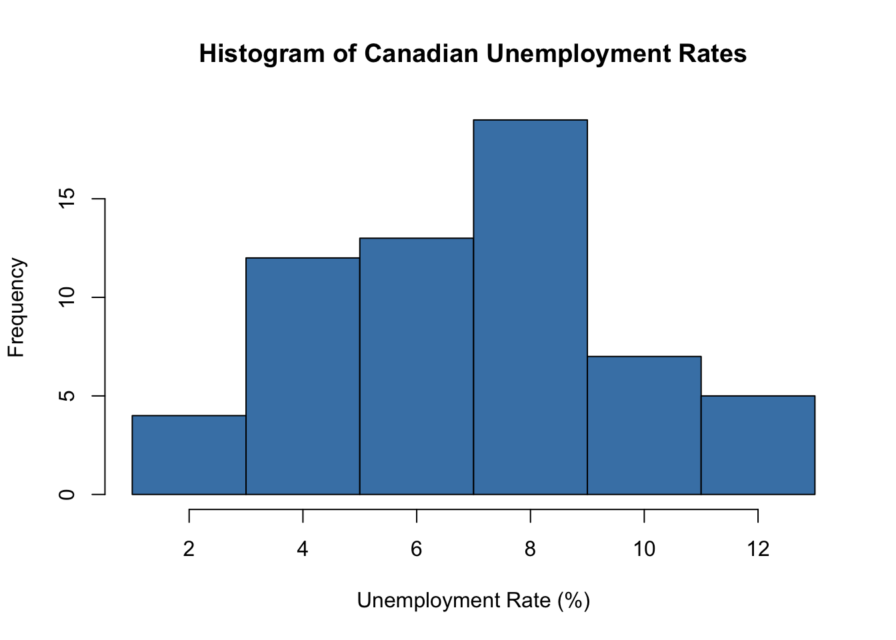
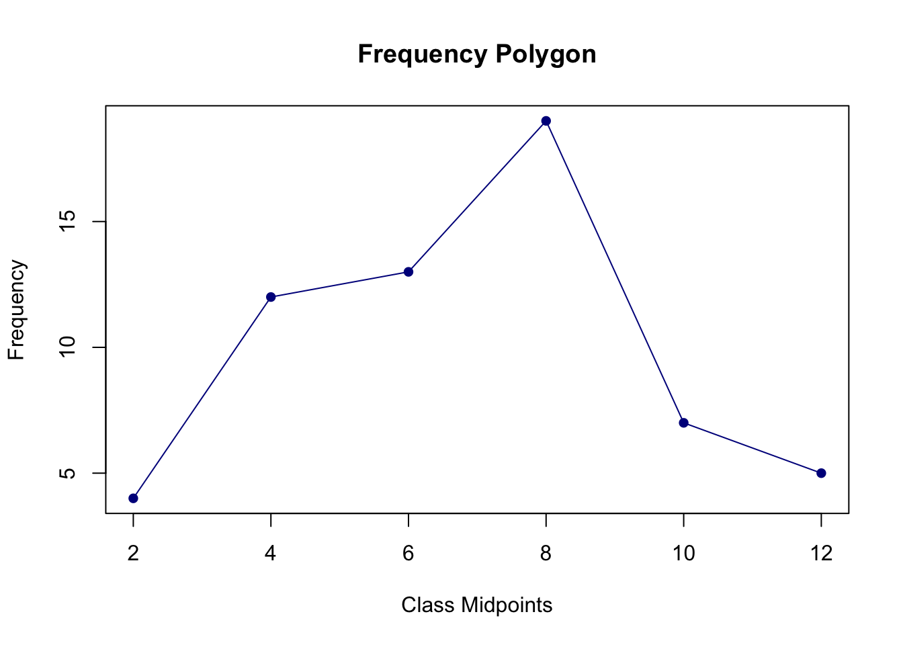
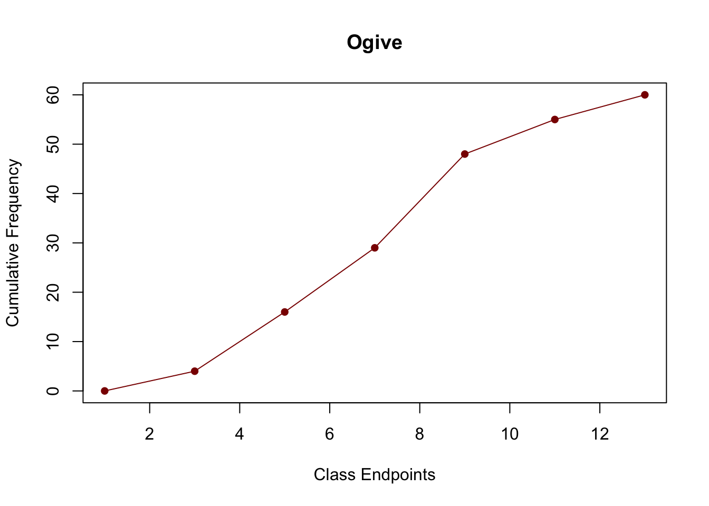
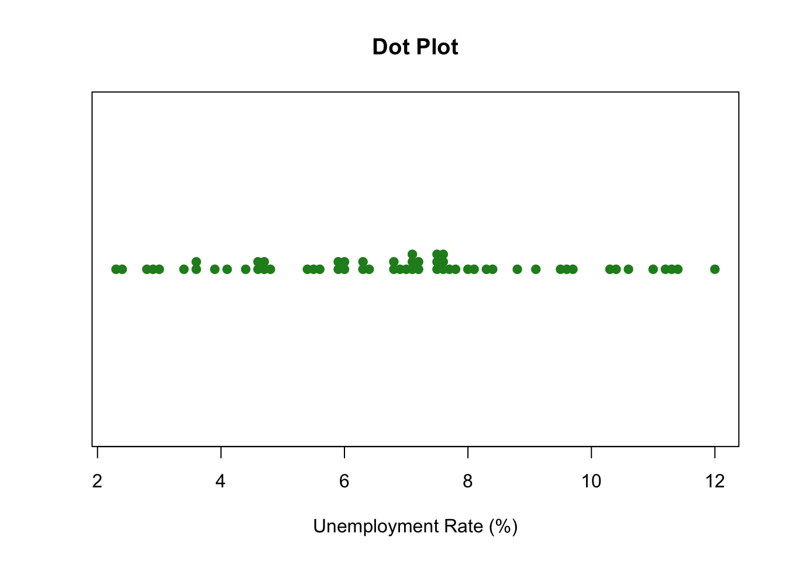

[1] TRUE[1] FALSE[1] TRUE Min. 1st Qu. Median Mean 3rd Qu. Max.
120.0 172.0 246.0 334.2 504.0 629.0 Definition of Statistics: The science dealing with the collection, analysis, interpretation, and presentation of numerical data to convert raw data into useful information for managerial decision making.
Business Applications: Used across corporate functional areas including marketing consumer surveys, operations quality tracking, teleworking productivity, and retail spend analysis.
Two Major Branches:
Core Terminology:
Nonmetric / Qualitative Data:
Metric / Quantitative Data:
[1] TRUE[1] FALSE[1] TRUE Min. 1st Qu. Median Mean 3rd Qu. Max.
120.0 172.0 246.0 334.2 504.0 629.0 Ungrouped vs. Grouped Data: Ungrouped data are raw, unsummarized observations; grouped data are organized into classes and frequencies.
Steps in Constructing a Frequency Distribution:
Frequency Metrics:
Class Freq Midpoint Rel_Freq Cum_Freq
1 [1,3) 4 2 0.0667 4
2 [3,5) 12 4 0.2000 16
3 [5,7) 13 6 0.2167 29
4 [7,9) 19 8 0.3167 48
5 [9,11) 7 10 0.1167 55
6 [11,13) 5 12 0.0833 60



The decimal point is at the |
2 | 3489
3 | 04669
4 | 1466778
5 | 45699
6 | 00334889
7 | 01112255566678
8 | 01348
9 | 1567
10 | 346
11 | 0234
12 | 0Pie Chart: Circular depiction dividing \(360^\circ\) proportionally to show the percentage breakdown of subcategories to the whole (\(Degrees = Proportion \times 360^\circ\)).
Bar Graph (or Column Chart): Displays categorical variables along one axis and rectangular bars along the other axis representing magnitude, frequency, or percentage. Superior to pie charts when discriminating between categories with similar magnitudes.
Pareto Chart: Vertical bar chart used in Total Quality Management (TQM) displaying causes of defects ranked in descending order from left to right, often overlaid with a cumulative percentage line. Separates the “vital few” defects from the “trivial many”.
# --- Chapter 2.3 R Implementation: Qualitative Graphics & Pareto Analysis ---
# Soft drink sales by location channel (from text)
channels <- c("Supermarket", "Fountain", "Convenience/Gas", "Vending", "Mass Merch", "Drugstore")
market_share <- c(44, 24, 16, 11, 3, 2)
# 1. Pie Chart
pie(market_share, labels = paste(channels, market_share, "%"),
main = "Soft Drink Sales Channels")
# 2. Bar Chart
barplot(market_share, names.arg = channels, col = "cornflowerblue",
las = 2, ylab = "Percentage of Sales", cex.names = 0.8,
main = "Bar Chart of Sales Locations")
# 3. Pareto Chart
defect_counts <- c(Poor_Wiring = 40, Short_Coil = 30, Defect_Plug = 25, Bearings = 5)
sorted_counts <- sort(defect_counts, decreasing = TRUE)
cum_pct <- cumsum(sorted_counts) / sum(sorted_counts) * 100
# Base R Pareto representation
bp <- barplot(sorted_counts, ylim = c(0, sum(sorted_counts) * 1.15),
col = "darkorange", ylab = "Defect Count", main = "Pareto Chart")
lines(bp, sorted_counts / sum(sorted_counts) * sum(sorted_counts), type = "b", pch = 19, col = "red")
axis(side = 4, at = seq(0, 100, by = 25) * sum(sorted_counts) / 100, labels = paste0(seq(0, 100, by = 25), "%"))Definition: A two-dimensional plot of paired numerical observations \((x, y)\) on Cartesian axes.
Purpose: Provides an exploratory visual display to detect directional patterns, linear or non-linear tendencies, dispersion, and outliers between two continuous variables.
# --- Chapter 2.4 R Implementation: Two-Variable Scatter Plot ---
# Advertising dollars vs. Sales revenue ($ millions) from Problem 2.16
advertising <- c(4.2, 1.6, 6.3, 2.7, 10.4, 7.1, 5.5, 8.3)
sales_revenue <- c(155.7, 87.3, 135.6, 99.0, 168.2, 136.9, 101.4, 158.2)
plot(advertising, sales_revenue,
pch = 19, col = "navy",
xlab = "Advertising ($ Millions)",
ylab = "Sales Revenue ($ Millions)",
main = "Scatter Plot: Advertising vs. Sales")
# Fit exploratory linear trend line
abline(lm(sales_revenue ~ advertising), col = "red", lwd = 2, lty = 2)Selecting honest, non-manipulative bin widths and class bounds for frequency distributions to avoid misrepresenting dispersion.
Avoiding the use of stretched, compressed, or truncated axes on histograms and line graphs to exaggerate or downplay trends.
Using appropriate analytical models calibrated directly to the level of data measurement (i.e., avoiding parametric computations on purely nominal or ordinal classifications).